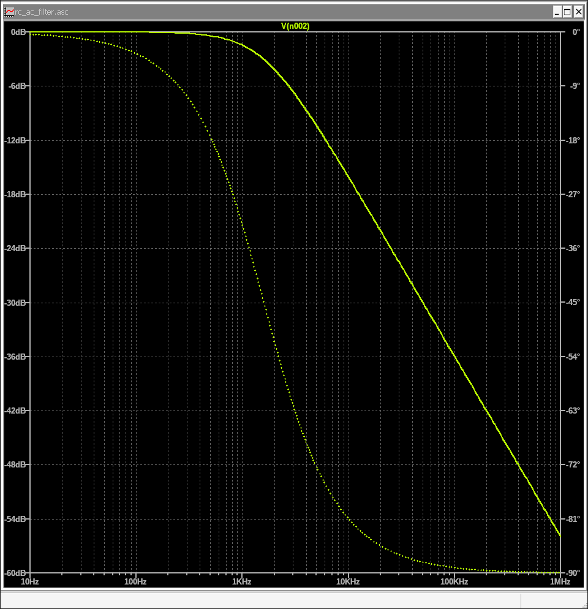
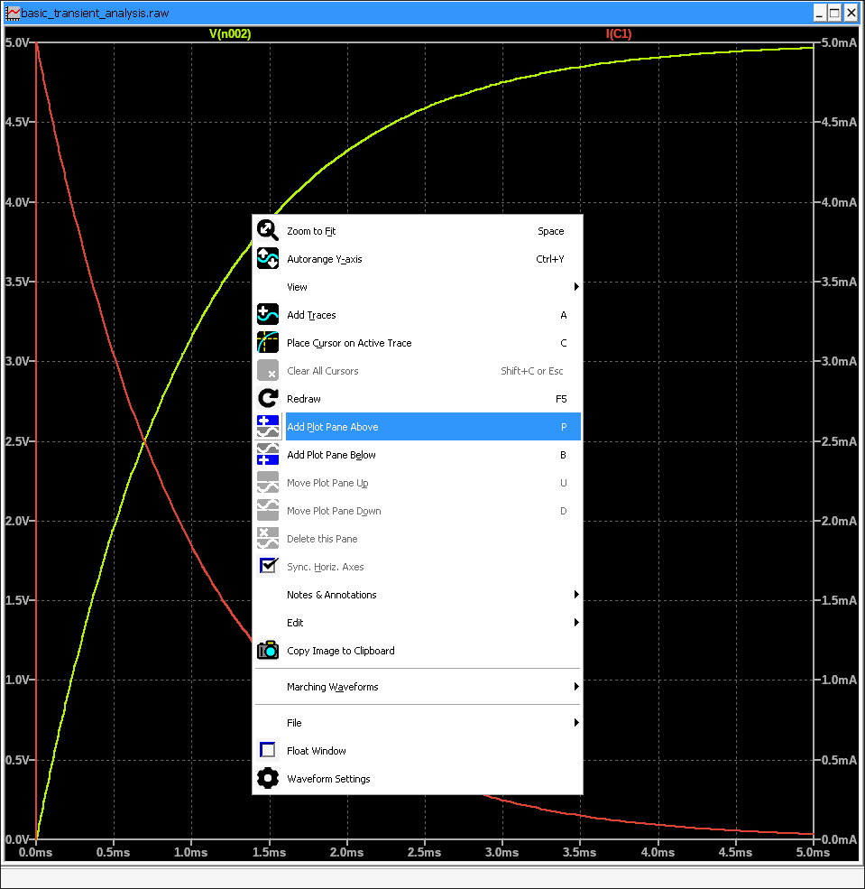
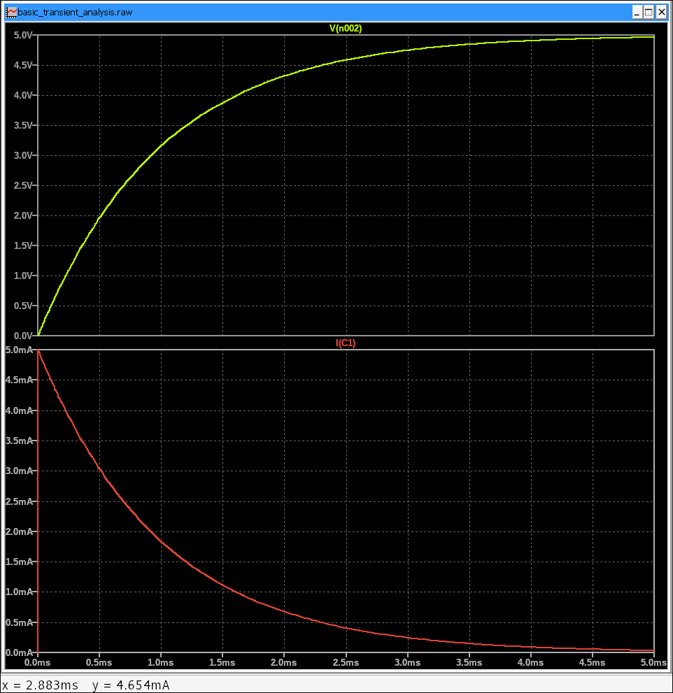
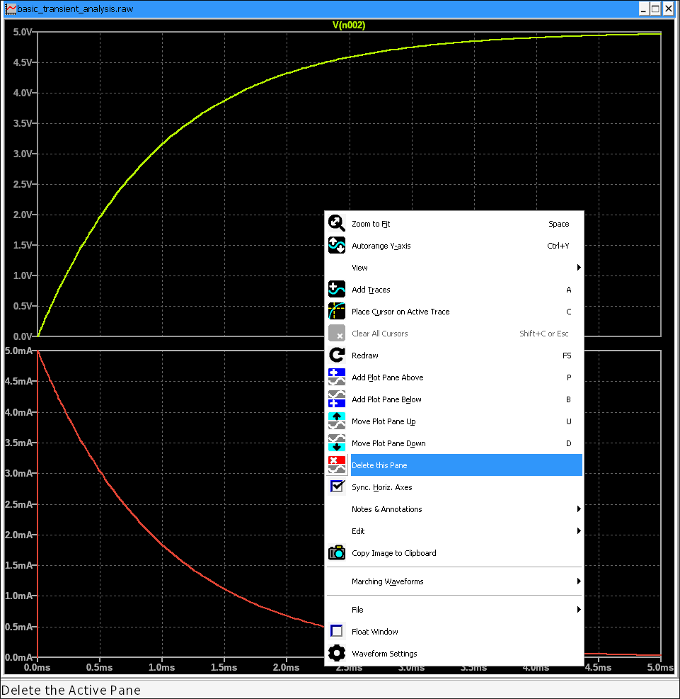
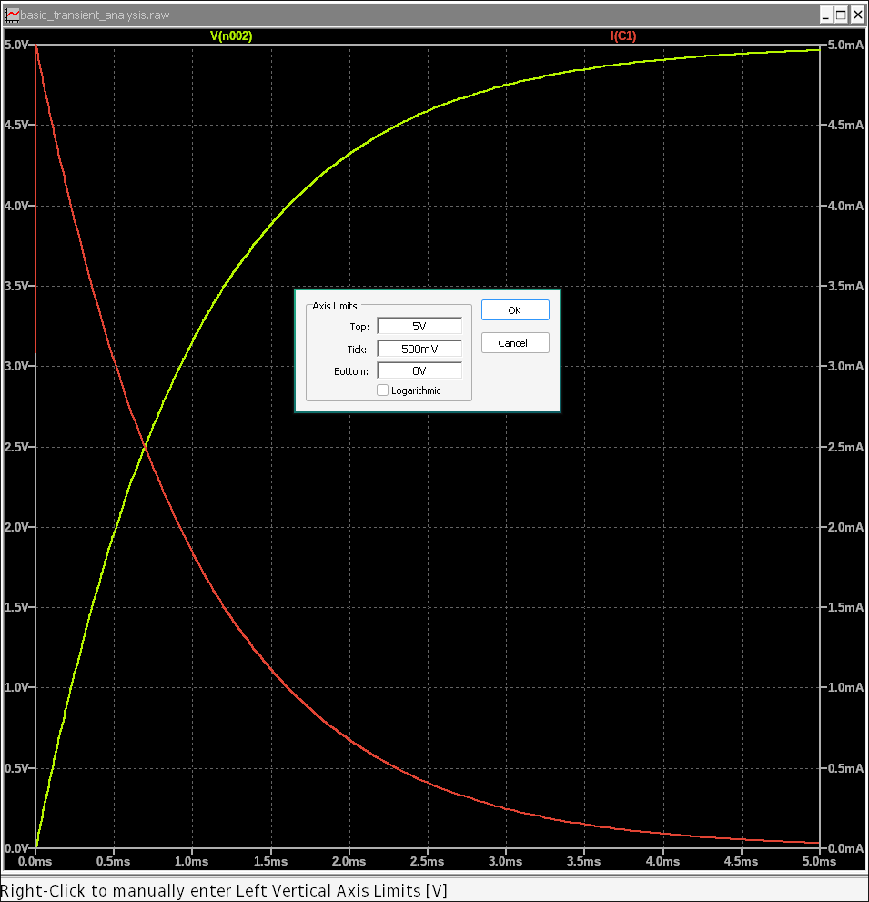
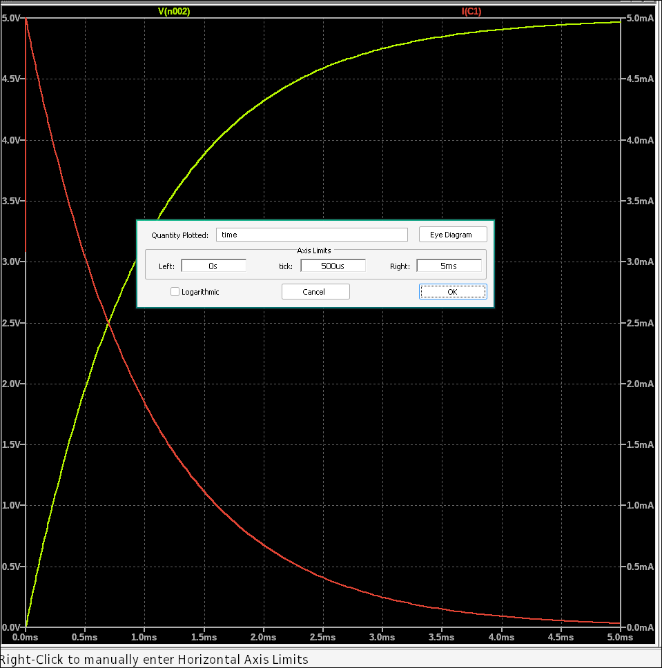

5. Working with Plot Windows: Analyzing Waveforms Effectively
After running a simulation (Transient or AC Analysis), LTSpice displays the results in a dedicated plot window. Mastering this window is crucial for accurately analyzing your circuit's behavior. This guide will show you how to customize plots, use cursors for precise measurements, and more.
5.1 Navigating the Plot Window
Once you run a simulation, a new window automatically opens, displaying your waveforms. You'll typically see voltage and current traces plotted against time (for Transient Analysis) or frequency (for AC Analysis).
You can select different traces by clicking on the wire/component in your schematic or by using the Add Trace option in the plot window.
5.2 Adding/Removing Plot Panes
For complex simulations, it's often helpful to separate different types of traces (e.g., voltage and current) into their own plot panes for clearer viewing.
- Adding a Plot Pane:
- In the plot window menu, right click > Add Plot Pane Above or Add Plot Pane Below. A new, empty plot area will appear. 
- You can then drag existing traces to the new pane or add new traces directly to it. 
- Removing a Plot Pane:
- To remove a pane, ensure it's the active pane (click on it). Then Right Click > Delete this Pane. 
- Alternatively, if a pane becomes empty (all its traces are removed or moved), it will automatically disappear.
Using separate panes is particularly useful when comparing signals with vastly different magnitudes or units, like voltage and current.
5.3 Adjusting Plot Scales
You can customize both the X-axis (time/frequency) and Y-axis (voltage/current) scales to better visualize your data.
Changing Y-axis (Voltage/Current) Scale:
- Right-click on the Y-axis of the plot pane you want to modify.
- A menu will appear with options:
- Linear/Logarithmic: Toggle between linear and logarithmic scaling for the amplitude. For most voltage/current plots, Linear is standard, but Logarithmic can be useful for very wide dynamic ranges.
- Manual Limits: Enter custom values for the Top and Bottom of the Y-axis range. This is great for focusing on specific signal levels.
- Automatic: Reverts to auto-scaling based on the trace data.

Changing X-axis (Time/Frequency) Scale:
- Right-click on the X-axis of the plot.
- Similar options to the Y-axis will appear:
- Linear/Logarithmic:
- For Transient Analysis (Time): Typically use Linear.
- For AC Analysis (Frequency): Almost always use Logarithmic (Decade or Octave) to properly visualize frequency responses like filters.
- Manual Limits: Set custom Left and Right bounds for the X-axis.

- Linear/Logarithmic:
Always choose the appropriate X-axis scale (linear for time, logarithmic for frequency) to ensure correct interpretation of your simulation results.
5.4 Using Cursors for Measurement
Cursors are powerful tools for taking precise measurements on your waveforms, such as voltage at a specific time, frequency, or the difference between two points.
- Activating Cursors:
- Method 1 (Quick): Click on the trace name (e.g., V(out), I(R1)) at the bottom of the plot window. A single cursor (Cursor 1) will appear.
- Method 2 (Right-click): Right-click anywhere on the plot background and select Place Cursor on Active Trace.
- Changing Cursor Types (Single vs. Dual):
- Single Cursor (Cursor 1): Appears after one click on the trace name. Drag it along the waveform to read values at that point.
- Dual Cursors (Cursor 1 & Cursor 2):
- Method 1: Click the same trace name a second time.
- Method 2: While Cursor 1 is active, hold Ctrl and click on another (or the same) trace name.
- Reading Cursor Values:
- A small pop-up box will appear near the cursors, displaying the X and Y values for each cursor, and crucially, the differences.
- For AC Analysis plots, it will also show the magnitude in dB and phase in degrees.
- Moving Cursors Precisely:
- Drag: Simply click and drag the cursor.
- Arrow Keys: With a cursor active, use the Left/Right arrow keys to move it along the X-axis. Use the Up/Down arrow keys to snap the cursor to peaks, troughs, or zero crossings of the active trace.
- Numerical Input: For very precise placement, right-click on a cursor (its vertical line) and enter a specific X-axis value.
Experiment with cursors to quickly find rise times, fall times, bandwidths, phase shifts, and other critical parameters.
5.5 Advanced Plot Interactions
Beyond the basics, LTSpice offers several other ways to interact with your plots:
- Zooming:
- Box Zoom: Click and drag your mouse to draw a box around the area you want to magnify.
- Zoom to Fit: Click the magnifying glass with an 'X' icon on the toolbar to reset the zoom to fit all data.
- Zoom In/Out: Use the dedicated zoom icons or your mouse scroll wheel (if configured).
- Adding/Deleting Traces:
- To add more traces, simply click on other wires or components in your schematic while the plot window is open.
- To remove a trace, right-click on its name at the bottom of the plot and select Delete This Trace.
- Saving Plot Data/Images:
- File > Save Plot Data As: Saves the raw data for external analysis.
- File > Print: Prints the plot.
- Edit > Copy Bitmap to Clipboard: Copies the plot image to your clipboard.
Mastering these plot manipulation techniques will significantly enhance your ability to extract meaningful insights from your LTSpice simulations. Practice by simulating various circuits and playing with the plot window features!